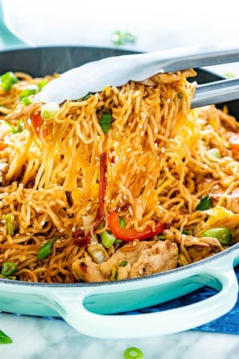

Chicken Ramen Stir-Fry Recipe

Description
Chicken Ramen Stir Fry is a simple but tasty dish that is perfect for any
night of the week. Packed full of crunchy veggies cooked down in a savory
spicy sauce, served over ramen noodles, this dish is a home run! A simple
5 ingredient Asian sauce, a couple veggies and juicy pieces of chicken all
tossed together with cooked ramen noodles is what it takes to create this
incredibly delicious stir fry!
Ingredients:
- Noodles
- Sauce
- Butter
- Chicken
- Veggies
- Garlic
- Seasoning
- Green onion
- Sesame seeds
Steps:
-
Cook the ramen: According to package instructions, reserve 1 cup of
water from the pot.
-
Combine the sauce: In a small bowl combine the soy sauce, oyster sauce,
sriracha, honey, and sesame oil. Whisk well. This is an incredibly easy
sauce, packed full of flavor that can be used in all sorts of stir fry
dishes.
-
Cook the chicken Melt the butter in a large skillet over medium heat
before adding the sliced chicken. Season with pepper and cook till
browned, flip over and season again with pepper before allowing to cook
through.
-
Add the veggies Add the sliced bell pepper and cook for 2-3 minutes
before adding the garlic and cooking till aromatic. Stir in the shredded
cabbage and allow to cook till it has wilted and browned, typically an
additional 2 minutes.
-
Finish the stir fry Add in the ramen noodles, the prepared sauce, you
can pour in some of the reserved water to ensure the sauce combines
well. Add the green onion and cook for an additional minute before
topping with sesame seeds and serving hot.